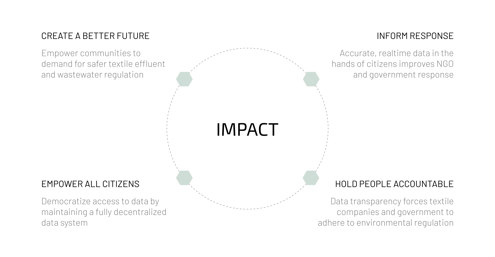

Base: 수질 오염 감지 솔루션
UI/UX Design + Interaction Design + 3D Modeling
Overview
Brief
Base는 수질 오염이라는 중요한 문제를 해결하기 위해 설계된 종합 솔루션입니다. 이 프로젝트는 물 속 오염 물질을 감지하고 테스트 결과를 즉시 분상형 가상 플랫폼에 업로드하는 센서를 개발하는 것을 포함합니다. Base는 첨단 기술과 사용자 중심의 설계 접근 방식을 활용하여 물의 안전성과 투명성을 높이고 사용자가 식수의 품질을 효과적으로 모니터링하고 보장할 수 있도록 하는 것을 목표로 합니다. 이 센서는 긴급 대응, 소비자 가정 내 모니터링, 향후 건물 인프라 통합 등 다양한 사용 사례에 맞게 설계되어 공중 보건을 보호할 수 있는 실시간 신뢰할 수 있는 데이터를 제공합니다.
Duration
Jan - May 2023
Role
Researcher, UI/UX Designer
Skills
- Use Cases
- Field Visits
- Digital Prototyping
- Physical Prototyping
- 3D Printing
Tools
- Figma
- Illustrator
- SolidWorks
Problem
물 오염은 심각하고 증가하는 문제입니다
깨끗하고 안전한 식수에 대한 접근은 필수적입니다. 자연 및 화학적 재해가 증가함에 따라 수로가 심각하게 오염되고 있습니다. 미국에서는 수원의 거의 절반이 수영, 낚시, 식수를 하기에 너무 오염되어 있습니다. 또한 정부 기관은 종종 수질 문제의 실제 심각성을 종종 은폐해 온 것도 문제로 지적되고 있습니다.

Research
실제 오염 사건 조사
매사추세츠주 애슐랜드
1965년부터 1978년까지 Nyanza Inc와 같은 기업들이 독성 섬유 폐수를 처리하여 토양, 지하수, 습지를 수은, 크롬, 비소, 납으로 심각하게 오염되었습니다. 지역 주민들은 이러한 오염 물질에 장기간 노출되면서 희귀 암을 포함한 심각한 건강 문제를 겪었습니다.


Competitive Analysis
기존 솔루션 평가 및 한계점 확인
높은 비용 (High Costs)
기존의 고정밀 솔루션은 비용이 많이 듭니다.
독성 시약 (Toxic Reagents)
섬유 염료를 테스트하려면 독성이 강한 시약이 필요합니다.
연결성 부족 (Lack of Connectivity)
소비자용 제품 중 분산형 네트워크에 연결된 제품은 존재하지 않습니다.

Research Question
화학 재해로부터 수질 데이터를 분산시켜 커뮤니티 네트워크를 어떻게 만들 수 있을까요?
이 질문은 투명하고 접근 가능한 수질 정보를 제공함으로써 지역 사회에 힘을 실어주는 시스템의 개발을 탐구하는 것을 목표로 합니다.
Insight 1
수질 오염은 광범위하고 위험합니다
매사추세츠주 애쉬랜드에서 실시한 연구에 따르면 산업 폐기물 처리로 인해 수은, 크롬, 비소, 납이 심각한 오염을 겪고 있는 것으로 나타났습니다. 지역 주민들은 심각한 건강 영향을 경험하며 신뢰할 수 있는 수질 검사의 필요성을 강조했습니다.

Insight 2
기존 솔루션은 비용이 높고 사용자 친화적이지 않습니다
경쟁 분석에 따르면 정확도가 높은 수질 검사 솔루션은 비용이 비싸고 유독성 시약이 필요합니다. 분산형 네트워크에 연결된 저렴하고 소비자 친화적인 옵션이 없으며 더 접근성 높은 솔루션의 필요성을 강조합니다.
Insight 3
사용자 피드백은 실시간 수질 데이터의 필요성을 강조합니다
인터뷰와 설문조사에 따르면 사용자들은 안전을 보장받기 위해 실시간으로 신뢰할 수 있는 수질 데이터를 원합니다. 즉각적인 테스트 및 보고를 위한 접근 가능한 도구의 부족은 오염된 지역 사회가 직면한 위험과 불확실성을 악화시키고 있습니다.
Solution
실시간 수질 오염 센서 개발
연구 결과를 바탕으로 수질 오염 센서가 테스트 결과를 가상형 커뮤니티 네트워크에 즉시 업로드하도록 설계되었습니다. 이 센서는 긴급 대응, 소비자 가정 모니터링, 향 후 건물 인프라 통합 등 세 가지 주요 시나리오에 적용할 수 있습니다.
System Map
수질 오염 관리에서의 역할과 상호작용 이해
Base의 시스템 지도는 수질 오염 문제 해결에 있어 다양한 이해관계자들의 역할을 설명하며, 그들의 책임과 상호작용을 강조합니다.
비정부 기관들 (NGOs)
지역사회 건강을 지원하고, 오염을 추적하며, 정책 변화를 추진하고, 정부에 책임을 묻습니다.
섬유 염료 회사 (Textile Dye Companies)
현재 비용 효율적인 염료를 사용하고 있지만, 책임을 회피하고 대중의 요구를 충족시키지 위해 지속 가능한 관행을 채택하도록 장려되고 있습니다.
정부/환경보호청 (Government/EPA)
깨끗한 물에 대한 접근성을 보장하고, 산업을 규제하며 신뢰를 쌓고 재난 대응을 개선하며 책임을 줄입니다.
일반 대중 (General Public)
안전과 건강을 옹호하고 깨끗한 물을 요구하며 저렴하고 안전한 제품에 대한 인식과 수요를 통해 업계 관행에 영향을 미칩니다.

Ideation
실용적이고 효과적인 센서 디자인 개발
연구 및 조사 결과를 바탕으로 테스트 결과를 분산형 가상 플랫폼에 즉시 업로드하는 수질 오염 센서가 구상되었습니다. 다양한 반복 설계를 통해 확인된 문제점과 사용자 요구 사항을 해결하기 위해 여러 방안을 탐구했습니다.

Initial Design
Base 센서 개념의 탐구 및 개선
물리적 프로토타입 (Physical Prototype)
분해 조립도는 유리, 물통, 라이트박스 화면, 배터리, 부착물 등 수도꼭지 센서의 구성 요소를 보여줍니다. 이 디자인은 종합적인 수질 모니터링 솔루션을 제공하기 위해 초기 개발되었습니다. 그러나 복잡한 구조와 높은 생산 비용, 내구성 문제 및 사용자 조립의 어려움으로 인해 폐기되었습니다.

디지털 프로토타입 (Digital Prototype)
앱 인터페이스는 유황 비율과 같은 수질 데이터를 실시간으로 표시하며, 데이터를 데이터베이스에 업로드하고 수질 지도를 볼 수 있는 옵션도 제공합니다. 이 디자인은 세밀한 모니터링을 제공하는 것을 목표로 했지만, 사용자 친화적인 내비게이션과 명확한 시각적 피드백이 부족했습니다. 사용자들은 데이터를 해석하고 적절한 조치를 취하기 어려워 더 직관적이고 접근하기 쉬운 인터페이스로 전환했습니다.
Use Cases
맞춤형 솔루션으로 다양한 요구 사항 해결
소비자: 수도꼭지
.png)
사용자
수질에 대해 걱정하는 일반 사용자
디자인 원칙
접근성, 지속적인 테스트, 손쉬운 통합, 사용자 알림 제공, 실행 가능한 조언 제공
접근 가능하고 지속적인 테스트를 통해 쉽게 통합되고 사용자에게 알림을 제공하며 실행 가능한 조언을 제공합니다.
비상 상황: 드론
.png)
사용자
비상 대응 요원
디자인 원칙
접근성, 지속적인 테스트, 기존 시스템에 손쉽게 통합, 사용자 알림 제공, 다음 단계 안내
기존 설정에 쉽게 통합되어 사용자에게 알림을 제공하는 접근 가능하고 지속적인 테스트가 다음 단계를 제공합니다.
미래 적용: 파이프 통합
.png)
User
모두 (건축 기준의 일부로 적용)
디자인 원칙
보편적 적용, 지속적인 테스트, 일상생활의 일부로 통합
일상 생활의 일부로 보편적으로 적용되며 지속적인 테스트를 거칩니다.
Creative Direction
성능, 미학, 미래 대비를 강조
성능 (Performance)
- 피드백 제공
- 외부 간섭 방지
- 간편한 유지보수
- 체계적인 관리
미학 (Aesthetics)
- 눈에 띄지 않는 디자인
- 자연스럽고 매끄러운 통합
- 단순하고 깔끔한 형태
미래 대비 (Soul)
- 신뢰와 투명성 강조
- 스마트한 접근성
- 사용자 친화적이고 접근하기 쉬운 디자인

User Flow
원활한 상호작용과 효과적인 수질 안전 대응 보장
Base의 사용자 흐름은 사용자가 수질 오염을 효과적으로 모니터링하고 대응할 수 있도록 설계되었습니다. 수질 수치를 기반으로 명확한 조치를 제공하여 안전한 물 사용을 돕습니다.

Data Process
사용자를 위한 프로세스 간소화
1. 탐지 (Detection)
센서가 오염 물질을 감지합니다.
2. 데이터 수집 (Data Collection)
Arduino에 연결하여 데이터를 수집합니다.
3. 데이터 저장 (Data Storage)
데이터를 클라우드에 저장합니다.
4. 사용자 인터페이스 (User Interface)
데이터를 사용자 인터페이스로 변환하여 실시간 피드백을 제공합니다.

Prototype
실시간 모니터링을 통한 가정 내 수질 안전 강화
소비자용 수도꼭지 센서 버전의 최종 프로토타입은 가정에서 지속적으로 수질을 모니터링할 수 있는 직관적인 솔류션을 제공합니다. 이 프로토타입은 물리적인 수도꼭지 부착 장최와 실시간 데이터 모니터링을 위한 디지털 인터페이스를 포함합니다. 수도꼭지 센서는 기존 배관 시스템과 자연스럽게 통합되며 수질에 대한 즉각적인 피드백을 제공합니다. 디지털 프로토타입은 사용자 친화적인 데이터 시각화를 통해 오염 물질에 대한 사용자의 경고와 실행 가능한 조언을 제공합니다. 이를 통해 사용자는 물의 안전성을 신뢰할 수 있게 관리할 수 있으며 일상 생활에서 건강과 안전을 향상시킬 수 있습니다.
Impact
지역 사회 역량 강화를 위한 수질 데이터
Base 프로토타입은 지속적인 모니터링과 실시간 피드백을 통해 가정 내 수질 안전을 향상시킵니다. 이를 통해 소외된 지역 사회에 힘을 실어주고, 비정부기구(NGO)와 정부의 대응을 개선하며, 섬유 회사의 책임성 높입니다. Base는 투명한 데이터를 제공함으로써 문화적 인식을 촉진하고 더 안전한 물 관리를 요구하며, 궁극적으로 공중 보건과 안전을 강화합니다.
Limitations
감지 성능 및 사용 편의성을 향상시키기 위해 개선 필요
Base 수질 오염 센서는 유망한 것으로 보이지만 개선해야 할 몇 가지 영역이 있습니다. 센서의 기능을 확장하여 더 넓은 범위의 오염 물질을 식별하는 것이 필수적입니다. 또한 추가 센서를 통합하면 데이터 정확성과 정밀도를 향상시킬 수 있습니다. 마지막으로 제품 디자인을 개선하여 광범위한 배포 및 사용자 채택에 적합하있도록 준비해야 합니다.


Reflection
Base 디자인 과정에서 사용자 중심 디자인과 실시간 데이터의 중요성을 확인
Base 수질 오염 센서 프로젝트는 접근 가능한 실시간 수질 검사 솔류션의 중요성을 강조했습니다. 센서의 디자인과 기능을 결정하는 데 있어 영향을 받는 지역 사회와 소통하며 그들의 어려움을 이해하는 과정은 필수적이었습니다. 이 프로젝트를 통해 사용자 중심 디자인의 가치와 투명하고 신뢰할 수 있는 데이터를 제공함으로써 사용자에게 힘을 실어주는 효과를 확인할 수 있었습니다. 또한 반복적인 개발과 사용자 피드백에 대한 민감한 대응이 공중 보건 문제를 해결하는 제품을 만드는 데 얼마나 중요한지를 깨닫게 되었습니다. 앞으로 이러한 인사이트는 향후 개선과 유사한 기술의 광범위한 기술 적용을 이끄는 지침이 될 것입니다.